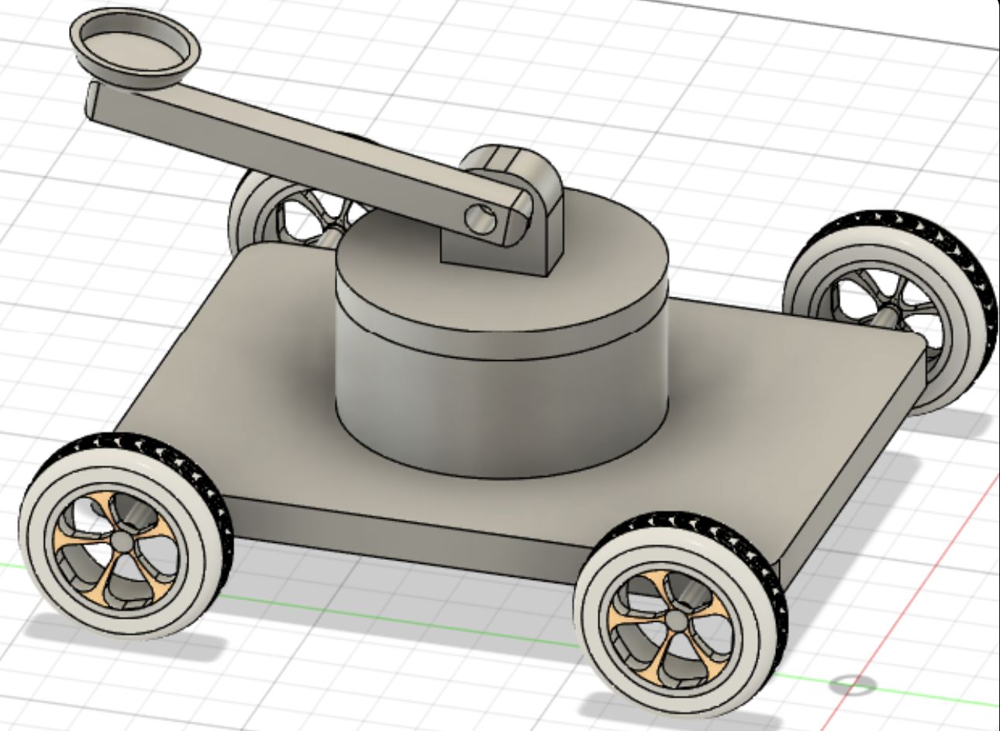
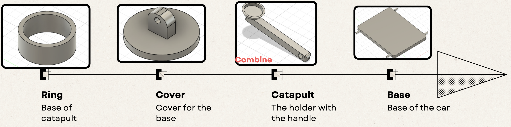
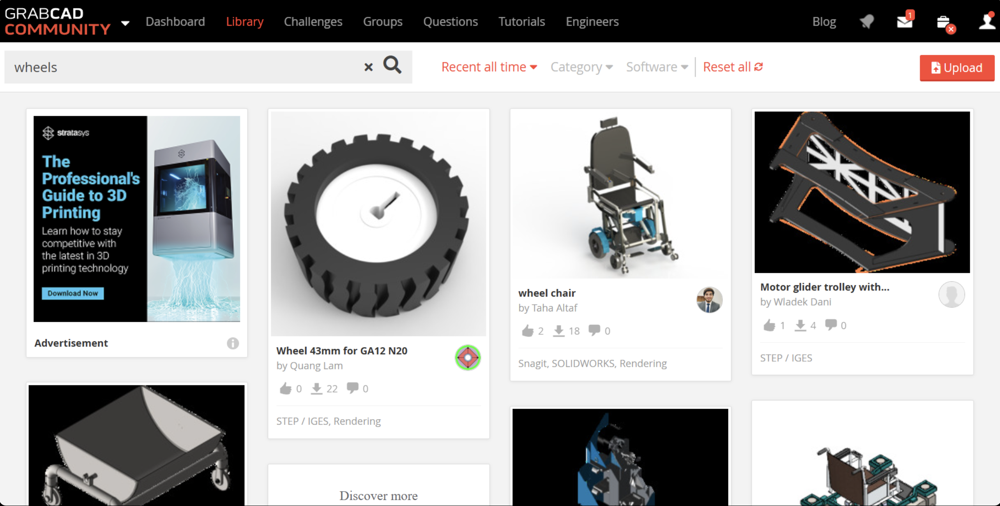

1.0 Why Do 3D Modelling?
- Turn ideas into tangible designs
- 3D modeling lets you visualize concepts clearly before building anything physically.
- Detect problems early
- You can test fit, dimensions, and functionality digitally, saving time, materials, and cost.
- 3D printing & fabrication
- Your model becomes a real object through 3D printing, CNC machining, or laser cutting.
Autodesk Fusion 360
Overview
Fusion 360 is a powerful 3D modeling software by Autodesk that lets you create precise, parametric designs for real-world use. It's beginner-friendly, widely used in engineering and product design, and perfect for creating models that can be exported for 3D printing.
1.1 Advantages
- Cloud Based
- Your files are auto-backed up, accessible anywhere, and version-controlled.
- Easy to Learn
- 360's interface is clean and guided, making it student-friendly for workshops and competitions.
- Free for Students
- Fully functional free license for students educators, and personal hobby use.
1.2 Basic Movements
- Zoom - Scrolling your middle mouse button
- Pan - Holding down the middle mouse button
- Orbit - Shift + Holding down midddle mouse button
1.3 Sketching
Sketching is the first step of creating any 3D model:
You draw 2D shapes like lines, circles, and rectangles on a plane, which act as the foundation for your 3D features. A good sketch makes the rest of your modeling easier and more accurate.
1.4 Extruding (Note: making 3D shapes as new components)
Extruding is the process of turning a 2D sketch into a 3D object:
You take a flat shape and pull or push it to give it thickness, creating a solid form. A well-defined sketch ensures the extrusion produces the shape you want accurately.
1.5 Additional Tools
- Inspect
- Visibility
- Fillet
- Scale
1.6 Practical Time
Timeline
Importing
1.7 Even More Tools
- Rigid Groups
- Align
- Paste New
- Timeline
- Removing
1.8 Exporting
STEP File
A STEP file (.step or .stp) is a widely used 3D CAD file format that stores precise 3D geometry and design data. It’s used to share models between different CAD software without losing design accuracy. STEP files are ideal for collaboration and professional manufacturing workflows.
STL File
An STL file (.stl) is a 3D file format that stores a model as a mesh of triangles. It is commonly used for 3D printing, because slicer software can read it and generate printing instructions. Unlike STEP files, STL files do not store exact CAD data or dimensions.
2.0 What is 3D Printing Used For?
- 3D printers are used to create physical objects from digital designs.
- They are used to make prototypes, models, and product samples.
- They are used to manufacture customized or one-of-a-kind parts.
- They are used to produce tools, replacement parts, and functional components.
- They are used to create complex shapes that traditional manufacturing cannot easily make.
- They are used in education, engineering, medicine, and hobby projects to turn ideas into real items.
2.1 Complexity of 3D Printing
The complexity depends on the 3D design.
Simple designs (boxes, flat shapes):
- Easy to print
- Fewer supports
- Faster and cheaper
Complex designs (overhangs, curves, mechanical parts):
- May require supports
- Higher precision or smaller layer height
- Better cooling
- Slower printing to avoid defects
The complexity affects both printing difficulty and time.
2.2 Printing 3D Designs for Prototyping Purposes
For prototyping:
- Use fast print settings (large layer height, low infill)
- Choose cheaper materials, such as PLA
- Focus on speed, not perfection
For the final version:
- Use higher quality settings (smaller layer height, strong infill)
- Choose materials based on the final use case (PETG, ABS, Nylon)
2.3 Longevity of 3D Printed Items
Longevity depends on:
- Material (PLA = short life in heat; PETG/ABS = longer; Nylon = longest)
- Environment (heat, humidity, sunlight)
- Mechanical stress
- Wall thickness + infill
Long-lasting prints usually need stronger materials, higher infill, and thicker walls.
2.4 Quality of Printing Filament
Different materials behave differently:
- PLA → stiff but brittle
- PETG → tough and slightly flexible
- ABS → strong and heat-resistant
- Nylon → very tough, flexible, impact-resistant
- TPU → rubber-like and bendable
Your needs decide the material and print settings.
2.5 3D Printing Technologies & Filaments
3D Printing Technologies
For context, 3D printers in Sunway iLabs use the FDM technology.
| Feature / Technology | SLS (Selective Laser Sintering) | FDM (Fused Deposition Modeling) | SLA (Stereolithography) |
|---|---|---|---|
| Printing Material | Polymer powder | Thermoplastic filament (PLA, ABS, PETG, etc.) | Liquid resin |
| Printing Method | Laser fuses powder particles layer by layer | Heated nozzle extrudes melted filament layer by layer | Laser cures liquid resin layer by layer |
| Print Quality / Resolution | High | Lowest | Very high |
| Surface Finish | Slightly rough (powdery texture) | Layer lines visible | Smooth and detailed |
| Strength / Durability | Very strong and durable | Moderate strength (depends on filament) | Strong but can be brittle |
| Accuracy | Excellent | Moderate | Excellent |
| Support Structures | Not required (powder supports the print) | Required for overhangs | Required for most prints |
| Cost (Printer + Materials) | Very expensive | Cheapest | Expensive |
| Ease of Use | Complex (industrial use) | Easy (ideal for beginners) | Moderate (careful handling of resin needed) |
| Speed | Moderate | Fast for small models | Slow to moderate |
| Applications | Functional prototypes, end-use parts, industrial manufacturing | Basic prototypes, hobby models, educational use | Functional prototypes, detailed models, molds, jewelry, dental models |
Printing Filaments
For context, printing filaments in Sunway iLabs are all made from PLA.
| Property | PLA (Polylactic Acid) | ABS (Acrylonitrile Butadiene Styrene) | PETG (Polyethylene Terephthalate Glycol) |
|---|---|---|---|
| Ease of Printing | Very easy to print — low warping, beginner-friendly | Harder to print — prone to warping, needs heated bed/enclosure | Moderate — easier than ABS but trickier than PLA |
| Strength | Moderate strength | High strength and impact resistance | High strength and flexibility |
| Flexibility | Brittle | Moderate | Flexible and tough |
| Heat Resistance | Low (~60 °C softening) | High (~100 °C) | Medium (~80 °C) |
| Durability | Not very durable; degrades in heat and sunlight | Very durable; resistant to wear | Durable and chemical-resistant |
| Surface Finish | Smooth and glossy | Matte finish | Slightly glossy and smooth |
| Environmental Impact | Biodegradable (corn-based) | Non-biodegradable (petroleum-based) | Recyclable but not biodegradable |
| Odor When Printing | Little to no odor | Strong, unpleasant fumes | Mild odor |
| Best Uses | Prototypes, models, educational prints | Functional parts, enclosures, mechanical components | Functional prototypes, food containers, outdoor parts |
| Requires Enclosure? | No | Yes (to prevent warping/fumes) | Not necessary but helpful for consistency |
| Cost | Low | Medium | Medium to slightly high |
Pros & Cons
| Filament | Pros | Cons |
|---|---|---|
| PLA | Easy to print, biodegradable, good surface finish | Brittle, low heat resistance |
| ABS | Strong, durable, heat-resistant | Warps easily, emits fumes, harder to print |
| PETG | Strong, flexible, durable, chemical-resistant | Can string easily, slower print speed needed |
Plastic Heating Technologies
| Feature | Thermoplastics | Thermosetting Plastics |
|---|---|---|
| Heat behavior | Soften when heated and harden when cooled repeatedly | Harden permanently after first heating; cannot be remelted |
| Recyclability | Can be recycled easily | Cannot be recycled once set |
| Flexibility | Usually soft, flexible, and ductile | Usually hard, rigid, and brittle |
| Molding process | Can be reshaped or remolded multiple times | Can be molded only once |
| Applications | Packaging, bottles, toys, electrical insulation | Switches, circuit boards, kitchenware handles, adhesives |
Issues from 3D Printing
Nozzle Blocked
- Occurs when filament cools in nozzle
- Fixed by pressing the 'Unload Extruder' option
Stringing
- This most commonly occurs due to a lack of support structures when printing the object in a specific orientation
- Less commonly, it occurs when the filament cools inside the nozzle, causing blockage
Nozzle Grinding
- Occur when nozzle is too close to the build plate
- Fixed by raising the nozzle by changing the nozzle settings
Warping
- Corners or edges of the print lift or detach from the print bed due to overcontracting of materials
- Fixed by ensuring the built plate is leveled correctly or use adhesives so that it is not too far from build plate
Adhesion
It is defined as the stickiness between the print bed and the 1st player of the model.
| Feature | Skirt | Brim | Raft |
|---|---|---|---|
| Touches the model? | ❌ No | ✔ Yes | ✔ Yes (under full base) |
| Adhesion strength | Low | Medium | Very High |
| Primary purpose | Prime nozzle, check flow | Increase surface area, reduce warping | Maximum adhesion, compensate uneven bed |
| Material usage | Very low | Low–Medium | High |
| Removal difficulty | None (not attached) | Easy | Harder; may leave marks |
| Effect on bottom surface | None | Slightly wider base | Rougher bottom, less detail |
| Best for | All prints (general use) | Warping materials, small bases | ABS, nylon, large parts; bad beds |
| Downsides | No adhesion improvement | Adds cleanup time | More printing time + wasted filament |